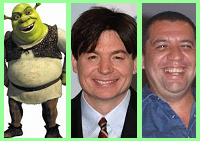
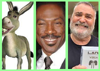
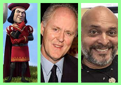

O Dublador do Shrek em Inglês se chama Mike Myers, Tem idade 59 anos, nascida em Scarborough, Toronto, Canadá, Mas infelizmente esse dublador não dublou mais nem um personagem
Já quem deu a voz a esse personagem icônico em Português se chama Bussunda, Tinha 43 anos quando morreu no dia 17 de junho de 2006, Nascido no Rio de Janeiro, não dublou outro personagem além do Shrek
A dubladora que da a voz para a melhor Princesa se chama Cameron Diaz,Tem 49 anos, nascida na cidade de San Diego, Califórnia, EUA, e ela também
da a voz Natalie Cook de as As Pantera-Detonando, Já em Português quem da a voz
chama Fernanda Crispim, tem 46 anos, Nascida no Rio de Janeiro, conhecida por dublar a Stacy de CSI: Miami.

O Dublador que da a voz do Burro em Inglês é o otimo ator Eddie Murphy, Tem 61 anos de Idade, Nascido na cidade de Nova Iorque, Nova York, EUA, que fez varios filmes de
comédia, que faz o Personagem Dr. Dolittle,Norbit e Príncipe Akeem, já em português se
chama Mário Jorge Andrade, Tem 68 anos, e nasceu na cidade de Rio de Janeiro, Ele que fazia a narração de Os Simpsons e o Titio Avô em Titio Avô

Quem dá a voz para o vilão desse filme em Inglês é o John Lithgow, tem 76 anos, e nasceu Nova York, EUA, que faz
Sir Winston Churchill em The Cown, Já em portuguém Cláudio Galvan, que tem 53 anos, nasceu no Rio de Janeiro, Que dá a voz a Lord Farquaad
que também dá a voz ao Pato donald é também ao Ursinho Pooh.
Voltar ao topo da pagina